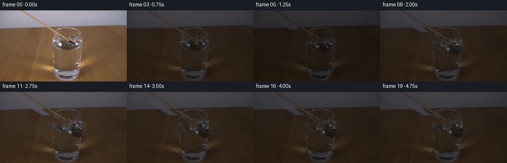
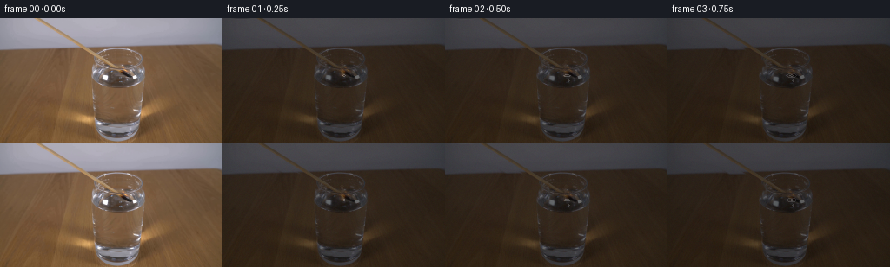
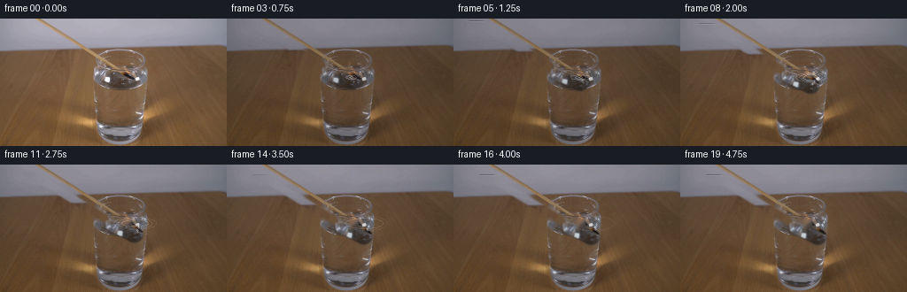
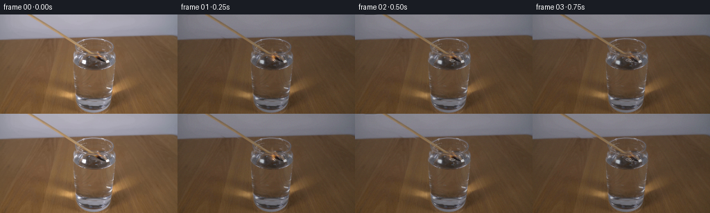

CODING AGENTS AS PIXEL WORLD MODELS
traex/DeepSeek-V4.1-Flash · 0110
点击播放 · 原生 RGB 像素
此结果可播放，但该运行尚未通过最终提交审核。页面展示不代表评测通过。
逐轮保存的候选
回放视频、检查图与代码变化。
每份候选均可单独播放。实际图片检查记录在下方工具轨迹中。
候选 01播放与检查图
点击播放 · 原生 RGB 像素


展开代码变化
--- 上一保存版本 +++ 本次保存版本 @@ -0,0 +1,205 @@ +from pathlib import Path + +import cv2 +import numpy as np + +import artifact_io + + +ROOT = Path(__file__).resolve().parent +FRAME_COUNT = 20 +HEIGHT = 144 +WIDTH = 256 + + +def match_mask() -> np.ndarray: + """Soft-edged mask covering the match shaft, head, and first-frame flame.""" + mask = np.zeros((HEIGHT, WIDTH), np.uint8) + cv2.line(mask, (12, -5), (121, 61), 255, 8, cv2.LINE_AA) + cv2.line(mask, (112, 59), (139, 73), 255, 11, cv2.LINE_AA) + cv2.ellipse(mask, (138, 69), (10, 9), 31, 0, 360, 255, -1, cv2.LINE_AA) + return mask + + +def make_clean_plate(frame: np.ndarray) -> tuple[np.ndarray, np.ndarray, np.ndarray]: + mask = match_mask() + hard = (mask > 0).astype(np.uint8) * 255 + clean = cv2.inpaint(frame, hard, 5, cv2.INPAINT_TELEA) + + # A light vertical median over the inpainted strip suppresses Telea streaks + # while retaining the table grain and glass highlights around the match. + blurred = cv2.medianBlur(clean, 5) + feather = cv2.GaussianBlur(mask, (0, 0), 1.25).astype(np.float32)[..., None] / 255.0 + clean = (clean.astype(np.float32) * (1.0 - feather) + blurred.astype(np.float32) * feather) + clean = np.clip(clean, 0, 255).astype(np.uint8) + + alpha = cv2.GaussianBlur(mask, (0, 0), 0.65).astype(np.float32) / 255.0 + sprite = frame.astype(np.float32) + return clean, alpha, sprite + + +def translate_match( + clean: np.ndarray, + alpha: np.ndarray, + sprite: np.ndarray, + distance: float, + submerged_depth: float, +) -> np.ndarray: + """Composite the match translated along its own shaft into the glass.""" + direction = np.array([0.817, 0.576], dtype=np.float32) + dx, dy = direction * distance + matrix = np.float32([[1, 0, dx], [0, 1, dy]]) + warped_sprite = cv2.warpAffine(sprite, matrix, (WIDTH, HEIGHT), flags=cv2.INTER_CUBIC) + warped_alpha = cv2.warpAffine(alpha, matrix, (WIDTH, HEIGHT), flags=cv2.INTER_LINEAR) + + # Water absorbs a little warmth and bends the submerged end slightly. + yy = np.arange(HEIGHT, dtype=np.float32)[:, None] + xx = np.arange(WIDTH, dtype=np.float32)[None, :] + under = np.clip((yy - 61.0) / 8.0, 0.0, 1.0) + bend = (1.2 + 0.05 * submerged_depth) * under * np.exp(-((xx - 139.0) / 18.0) ** 2) + refract = cv2.remap( + warped_sprite, + np.broadcast_to(xx - bend, (HEIGHT, WIDTH)).astype(np.float32), + np.broadcast_to(yy + 0.25 * under, (HEIGHT, WIDTH)).astype(np.float32), + cv2.INTER_LINEAR, + borderMode=cv2.BORDER_REPLICATE, + ) + tint = np.array([0.78, 0.91, 1.00], dtype=np.float32) + refracted = refract * (1.0 - 0.28 * under[..., None]) + refract * tint * (0.28 * under[..., None]) + + a = warped_alpha[..., None] + out = clean.astype(np.float32) * (1.0 - a) + refracted * a + return np.clip(out, 0, 255).astype(np.uint8) + + +def add_flame_and_water_effects( + image: np.ndarray, + frame_index: int, + head_center: tuple[float, float], + distance: float, +) -> np.ndarray: + out = image.astype(np.float32) + x, y = head_center + t = frame_index / 4.0 + + # The match is already at the surface in frame zero. Its small flame gives + # one last uneven pulse and is gone before the head is fully immersed. + flame_strength = max(0.0, 1.0 - frame_index / 3.3) + if flame_strength > 0: + layers = [ + (x - 2.0, y - 7.0, 3.1, 5.0, (255, 92, 22), 0.52), + (x - 1.2, y - 6.0, 1.7, 3.6, (255, 174, 54), 0.74), + (x - 0.6, y - 5.0, 0.7, 2.1, (255, 245, 190), 0.90), + ] + flicker = 1.0 + 0.18 * np.sin(9.3 * t + 0.7) + for cx, cy, rx, ry, color, opacity in layers: + overlay = np.zeros_like(out, dtype=np.float32) + cv2.ellipse( + overlay, + (round(cx + 0.8 * np.sin(8.0 * t)), round(cy)), + (max(1, round(rx * flicker)), max(1, round(ry * flicker))), + 4.0 * np.sin(5.0 * t), + 0, + 360, + color, + -1, + cv2.LINE_AA, + ) + glow = cv2.GaussianBlur(overlay, (0, 0), 3.1) + out += glow * (opacity * flame_strength * 0.24) + out = out * (1.0 - opacity * flame_strength * 0.18) + overlay * ( + opacity * flame_strength * 0.18 + ) + + # A thin smoke thread rises and dissipates after extinction. + if 1 <= frame_index <= 10: + age = frame_index - 1 + strength = max(0.0, 0.34 * (1.0 - age / 11.0)) + for k in range(6): + phase = age + k * 0.8 + sx = x - 1.5 + 0.8 * np.sin(1.8 * phase + k) + sy = y - 8.0 - k * 2.2 - 0.4 * age + radius = 1 + k * 0.17 + overlay = np.zeros_like(out, dtype=np.float32) + cv2.circle(overlay, (round(sx), round(sy)), max(1, round(radius)), (181, 177, 174), -1, cv2.LINE_AA) + out = out * (1.0 - strength * 0.15) + overlay * (strength * 0.15) + + # Small concentric surface disturbances, strongest just after contact. + if frame_index >= 1: + contact_x = x + 1.0 + contact_y = 65.5 + for k in range(3): + age = frame_index - 1 - k * 2 + if age < 0 or age > 12: + continue + radius = 2.0 + 2.15 * age + opacity = max(0.0, 0.24 * (1.0 - age / 13.0)) + overlay = np.zeros_like(out, dtype=np.float32) + cv2.ellipse( + overlay, + (round(contact_x), round(contact_y)), + (round(radius), max(1, round(radius * 0.30))), + 0, + 0, + 360, + (225, 235, 240), + 1, + cv2.LINE_AA, + ) + out = out * (1.0 - opacity) + overlay * opacity + + # Tiny bubbles slide upward from the wet charred tip. + for k in range(5): + birth = 2 + k * 2 + age = frame_index - birth + if age < 0: + continue + bx = x + 3.0 + 0.8 * np.sin(k * 2.1) + 0.28 * age + by = y + 2.0 - 1.1 * age - k * 0.8 + if by < 58 or by > 76: + continue + overlay = np.zeros_like(out, dtype=np.float32) + cv2.circle(overlay, (round(bx), round(by)), 1, (214, 227, 232), -1, cv2.LINE_AA) + out = out * 0.82 + overlay * 0.18 + + # Very small amount of grain keeps the composited motion from looking sterile. + if frame_index: + rng = np.random.default_rng(4100 + frame_index) + grain = rng.normal(0.0, 1.15, out.shape).astype(np.float32) + out += grain + return np.clip(out, 0, 255).astype(np.uint8) + + +def generate_frames() -> np.ndarray: + first = cv2.imread(str(ROOT / "first_frame.png"), cv2.IMREAD_COLOR) + if first is None: + raise FileNotFoundError(ROOT / "first_frame.png") + first = cv2.cvtColor(first, cv2.COLOR_BGR2RGB) + clean, alpha, sprite = make_clean_plate(first) + + frames = [] + for index in range(FRAME_COUNT): + if index == 0: + frames.append(first.copy()) + continue + + # Ease into a steady insertion and hold once the head is well inside. + progress = min(1.0, index / 12.0) + eased = 0.5 - 0.5 * np.cos(np.pi * progress) + distance = 23.0 * eased + direction = np.array([0.817, 0.576], dtype=np.float32) + head = np.array([138.0, 69.0], dtype=np.float32) + direction * distance + frame = translate_match(clean, alpha, sprite, distance, distance * 0.576) + frame = add_flame_and_water_effects(frame, index, (float(head[0]), float(head[1])), distance) + frames.append(frame) + + return np.stack(frames) + + +def main() -> None: + frames = generate_frames() + artifact_io.save(frames, ROOT) + + +if __name__ == "__main__": + main()
候选 02播放与检查图
点击播放 · 原生 RGB 像素


展开代码变化
--- 上一保存版本
+++ 本次保存版本
@@ -79,6 +79,11 @@
distance: float,
) -> np.ndarray:
out = image.astype(np.float32)
+ # Keep all effect layers additive and locally alpha-weighted. This avoids
+ # applying a second full-frame attenuation to the reconstructed scene.
+ glow_accum = np.zeros_like(out)
+ local_accum = np.zeros_like(out)
+ local_weight = np.zeros((HEIGHT, WIDTH, 1), dtype=np.float32)
x, y = head_center
t = frame_index / 4.0
@@ -106,9 +111,11 @@
cv2.LINE_AA,
)
glow = cv2.GaussianBlur(overlay, (0, 0), 3.1)
- out += glow * (opacity * flame_strength * 0.24)
- out = out * (1.0 - opacity * flame_strength * 0.18) + overlay * (
- opacity * flame_strength * 0.18
+ glow_accum += glow * (opacity * flame_strength * 0.24)
+ local_accum += overlay * (opacity * flame_strength * 0.18)
+ local_weight = np.maximum(
+ local_weight,
+ np.full_like(local_weight, opacity * flame_strength * 0.18),
)
# A thin smoke thread rises and dissipates after extinction.
@@ -122,7 +129,8 @@
radius = 1 + k * 0.17
overlay = np.zeros_like(out, dtype=np.float32)
cv2.circle(overlay, (round(sx), round(sy)), max(1, round(radius)), (181, 177, 174), -1, cv2.LINE_AA)
- out = out * (1.0 - strength * 0.15) + overlay * (strength * 0.15)
+ local_accum += overlay * (strength * 0.15)
+ local_weight = np.maximum(local_weight, np.full_like(local_weight, strength * 0.15))
# Small concentric surface disturbances, strongest just after contact.
if frame_index >= 1:
@@ -146,7 +154,8 @@
1,
cv2.LINE_AA,
)
- out = out * (1.0 - opacity) + overlay * opacity
+ local_accum += overlay * opacity
+ local_weight = np.maximum(local_weight, np.full_like(local_weight, opacity))
# Tiny bubbles slide upward from the wet charred tip.
for k in range(5):
@@ -160,7 +169,10 @@
continue
overlay = np.zeros_like(out, dtype=np.float32)
cv2.circle(overlay, (round(bx), round(by)), 1, (214, 227, 232), -1, cv2.LINE_AA)
- out = out * 0.82 + overlay * 0.18
+ local_accum += overlay * 0.18
+ local_weight = np.maximum(local_weight, np.full_like(local_weight, 0.18))
+
+ out = out * (1.0 - local_weight) + local_accum + glow_accum
# Very small amount of grain keeps the composited motion from looking sterile.
if frame_index:
@@ -184,9 +196,9 @@
continue
# Ease into a steady insertion and hold once the head is well inside.
- progress = min(1.0, index / 12.0)
+ progress = min(1.0, index / 16.0)
eased = 0.5 - 0.5 * np.cos(np.pi * progress)
- distance = 23.0 * eased
+ distance = 20.0 * eased
direction = np.array([0.817, 0.576], dtype=np.float32)
head = np.array([138.0, 69.0], dtype=np.float32) + direction * distance
frame = translate_match(clean, alpha, sprite, distance, distance * 0.576)
候选 03播放与检查图
点击播放 · 原生 RGB 像素
展开代码变化
--- 上一保存版本
+++ 本次保存版本
@@ -56,6 +56,9 @@
yy = np.arange(HEIGHT, dtype=np.float32)[:, None]
xx = np.arange(WIDTH, dtype=np.float32)[None, :]
under = np.clip((yy - 61.0) / 8.0, 0.0, 1.0)
+ head_x = 138.0 + 0.817 * distance
+ head_y = 69.0 + 0.576 * distance
+ head_region = np.exp(-(((xx - head_x) / 7.5) ** 2 + ((yy - head_y) / 6.0) ** 2))
bend = (1.2 + 0.05 * submerged_depth) * under * np.exp(-((xx - 139.0) / 18.0) ** 2)
refract = cv2.remap(
warped_sprite,
@@ -65,7 +68,10 @@
borderMode=cv2.BORDER_REPLICATE,
)
tint = np.array([0.78, 0.91, 1.00], dtype=np.float32)
- refracted = refract * (1.0 - 0.28 * under[..., None]) + refract * tint * (0.28 * under[..., None])
+ head_visibility = (0.28 - 0.19 * head_region)[..., None]
+ shaft_softening = 0.16 * under[..., None]
+ refracted = refract * (1.0 - shaft_softening) + clean.astype(np.float32) * shaft_softening
+ refracted = refracted * (1.0 - head_visibility) + refract * tint * head_visibility
a = warped_alpha[..., None]
out = clean.astype(np.float32) * (1.0 - a) + refracted * a
候选 04播放与检查图
可观测工具轨迹
实际执行的命令与返回图片。
命令 1exit 0
/bin/bash -c "pwd && rg --files -g 'prompt.txt' -g 'GENERATION_RULES.md' -g '"'!*.png'"' -g '"'!*.mp4'"' | sort"
命令 2exit 0
/bin/bash -c "ls -la && find . -maxdepth 2 -type f -printf '%p\\n' | sort | head -200"
命令 3exit 0
/bin/bash -c 'cat prompt.txt'
命令 4exit 0
/bin/bash -c 'cat GENERATION_RULES.md'
命令 5exit 0
/bin/bash -c "sed -n '1,240p' artifact_io.py && sed -n '1,240p' player_template.html"
命令 6exit 0
/bin/bash -c "python - <<'PY'
from PIL import Image
im=Image.open('first_frame.png')
im.crop((20,0,190,140)).resize((680,560),Image.Resampling.NEAREST).save('.tmp/first_crop.png')
PY"命令 7exit 0
/bin/bash -c "python - <<'PY' import importlib.util for m in ['cv2','scipy','skimage','numpy','PIL']: print(m, bool(importlib.util.find_spec(m))) PY"
命令 8exit 0
/bin/bash -c "python - <<'PY'
from PIL import Image
import numpy as np
im=np.array(Image.open('first_frame.png'))
print(im.shape)
for y in range(0,100,5):
print(y, im[y, [30,50,70,90,110,130,140,145,150,155]].tolist())
PY"命令 9exit 0
/bin/bash -c "python - <<'PY'
from PIL import Image
import numpy as np
im=np.array(Image.open('first_frame.png')).astype(float)
for y in range(0,68,2):
row=im[y]
score=(row[:,0]-row[:,2]) + .25*(row[:,0]+row[:,1])
x0=20+int(1.65*y)
lo=max(0,x0-10); hi=min(256,x0+10)
xs=np.argsort(score[lo:hi])[-4:][::-1]+lo
print(y, [(int(x), tuple(row[x].astype(int))) for x in xs])
PY"命令 10exit 0
/bin/bash -c "python - <<'PY'
from PIL import Image
import numpy as np
im=np.array(Image.open('first_frame.png'))
# glass geometry diagnostics around edge and waterline
for y in [30,35,40,50,60,62,65,70,75,80,90,100,110,120,130]:
# strongest horizontal gradients
gray=im[y].mean(1)
g=np.abs(np.diff(gray))
idx=np.argsort(g)[-10:][::-1]
print(y, [(int(i),round(float(g[i]),1),tuple(im[y,i].astype(int))) for i in idx[:8]])
PY"命令 11exit 0
/bin/bash -c "python - <<'PY'
from PIL import Image
import numpy as np
im=np.array(Image.open('first_frame.png'))
# sample vertical strips table
for x in [80,85,90,95,100,105,110,115,120,125,130,135,140,145,150,155,160,165,170]:
print('\\nx',x)
print([(y,tuple(im[y,x])) for y in range(30,86,3)])
PY"命令 12exit 1
/bin/bash -c 'python generate.py'
命令 13exit 0
/bin/bash -c 'python generate.py'
命令 14exit 0
/bin/bash -c "python - <<'PY'
from PIL import Image
for i in [0,1,2,3,5,8,12,16,19]:
im=Image.open(f'frames/{i:02d}.png')
im.resize((1024,576),Image.Resampling.NEAREST).save(f'.tmp/f{i:02d}.png')
PY"命令 15exit 0
/bin/bash -c "python - <<'PY'
from PIL import Image
for i in [0,1,2,3,4,5,8,12,16,19]:
im=Image.open(f'frames/{i:02d}.png')
im.crop((75,20,175,95)).resize((800,600),Image.Resampling.NEAREST).save(f'.tmp/c{i:02d}.png')
PY"命令 16exit 0
/bin/bash -c "python - <<'PY'
from PIL import Image
import numpy as np
from scipy.ndimage import median_filter
im=np.array(Image.open('first_frame.png')).astype(float)
for y in range(0,61,2):
row=im[y]
# match is yellowish/darker than wall and then glass, use R-B / brightness
s=(row[:,0]+row[:,1])/2 - row[:,2]*.2
# expected x broad
exp=13+1.8*y
lo=max(0,int(exp-10));hi=min(256,int(exp+10))
xs=np.argsort(s[lo:hi])[-5:][::-1]+lo
print(y,round(exp,1),[(int(x),tuple(row[x].astype(int))) for x in xs])
PY"命令 17exit 0
/bin/bash -c "python - <<'PY'
from PIL import Image
import numpy as np
im=np.array(Image.open('first_frame.png'))
# print row colors around match/head and cup positions at native resolution, compact as chars
for y in range(55,78):
vals=[]
for x in range(105,160,3):
r,g,b=im[y,x]
vals.append(f'{x}:{r:03d}/{g:03d}/{b:03d}')
print(y,' '.join(vals))
PY"命令 18exit 0
/bin/bash -c "python - <<'PY'
from PIL import Image
im=Image.open('first_frame.png')
im.crop((100,20,175,85)).resize((900,780),Image.Resampling.NEAREST).save('.tmp/orig_detail.png')
PY"命令 19exit 0
/bin/bash -c "python - <<'PY'
from PIL import Image
import numpy as np
orig=np.array(Image.open('first_frame.png'))
out=np.array(Image.open('frames/00.png'))
print('identical',np.array_equal(orig,out),'maxdiff',np.abs(orig.astype(int)-out.astype(int)).max())
for i in range(20):
a=np.array(Image.open(f'frames/{i:02d}.png')).astype(float)
print(i, round(a.mean(),2), round(a.std(),2), np.abs(a-np.array(Image.open('first_frame.png')).astype(float)).mean().round(2))
PY"命令 20exit 0
/bin/bash -c "python - <<'PY'
import generate as g, cv2, numpy as np
f=cv2.cvtColor(cv2.imread('first_frame.png'),cv2.COLOR_BGR2RGB)
c,a,s=g.make_clean_plate(f)
print('first',f.mean(),'clean',c.mean(),c.min(),c.max())
tr=g.translate_match(c,a,s,2.5,1.4)
print('trans',tr.mean(),tr.min(),tr.max())
ef=g.add_flame_and_water_effects(tr,1,(140,70),2.5)
print('effects',ef.mean(),ef.min(),ef.max())
PY"命令 21exit 0
/bin/bash -c "python generate.py && python - <<'PY'
from PIL import Image
import numpy as np
for i in range(20):
a=np.array(Image.open(f'frames/{i:02d}.png')).astype(float)
print(i, round(a.mean(),2), round(a.std(),2))
PY"命令 22exit 0
/bin/bash -c "python - <<'PY'
from PIL import Image
for i in [1,2,3,5,8,12,16,19]:
im=Image.open(f'frames/{i:02d}.png')
im.resize((1024,576),Image.Resampling.NEAREST).save(f'.tmp/f{i:02d}.png')
im.crop((75,20,175,95)).resize((800,600),Image.Resampling.NEAREST).save(f'.tmp/c{i:02d}.png')
PY"命令 23exit 0
/bin/bash -c "python generate.py && python - <<'PY'
from pathlib import Path
import json, numpy as np
from PIL import Image
p=Path('.')
f=np.array(Image.open('first_frame.png'))
o=np.array(Image.open('frames/00.png'))
a=np.load('pixels.npz')['pixels']
print('shape', a.shape, a.dtype)
print('frame0 exact:', np.array_equal(f,o))
print('frames:', len(list((p/'frames').glob('*.png'))))
print('html bytes:', (p/'index.html').stat().st_size)
print('npz bytes:', (p/'pixels.npz').stat().st_size)
PY"命令 24exit 0
/bin/bash -c "python - <<'PY' import importlib.util for m in ['playwright','selenium']: print(m,bool(importlib.util.find_spec(m))) PY which chromium chromium-browser google-chrome firefox 2>/dev/null || true"
命令 25exit 1
/bin/bash -c 'python -m http.server 8765 --bind 127.0.0.1'
命令 26exit 1
/bin/bash -c "python - <<'PY'
from playwright.sync_api import sync_playwright
from pathlib import Path
url=Path('index.html').resolve().as_uri()
with sync_playwright() as p:
b=p.chromium.launch(headless=True)
page=b.new_page(viewport={'width':1000,'height':650})
errors=[]
page.on('pageerror',lambda e: errors.append(str(e)))
page.goto(url)
page.wait_for_function('window.__pixelReady === true')
page.screenshot(path='.tmp/player_initial.png', full_page=True)
page.click('#play')
page.wait_for_timeout(3200)
page.screenshot(path='.tmp/player_playing.png', full_page=True)
state=page.evaluate('''() => ({ready: window.__pixelReady, time: document.querySelector(\"#time\").textContent, button: document.querySelector(\"#play\").textContent, canvas: [document.querySelector(\"canvas\").width, document.querySelector(\"canvas\").height]})''')
print(state)
print('page errors:',errors)
b.close()
PY"命令 27exit 1
/bin/bash -c 'mkdir -p .tmp/playwright && TMPDIR="$PWD/.tmp/playwright" PLAYWRIGHT_BROWSERS_PATH="$HOME/.cache/ms-playwright" python - <<'"'PY'
from playwright.sync_api import sync_playwright
from pathlib import Path
url=Path('index.html').resolve().as_uri()
with sync_playwright() as p:
b=p.chromium.launch(headless=True)
page=b.new_page(viewport={'width':1000,'height':650})
errors=[]
page.on('pageerror',lambda e: errors.append(str(e)))
page.goto(url)
page.wait_for_function('window.__pixelReady === true')
page.screenshot(path='.tmp/player_initial.png', full_page=True)
page.click('#play')
page.wait_for_timeout(3200)
page.screenshot(path='.tmp/player_playing.png', full_page=True)
state=page.evaluate('''() => ({ready: window.__pixelReady, time: document.querySelector(\"#time\").textContent, button: document.querySelector(\"#play\").textContent, canvas: [document.querySelector(\"canvas\").width, document.querySelector(\"canvas\").height]})''')
print(state)
print('page errors:',errors)
b.close()
PY"命令 28exit 0
/bin/bash -c "find /home/tiger/.cache/ms-playwright /opt /usr -maxdepth 5 -type f \\( -name 'chrome' -o -name 'chromium' -o -name 'chrome-headless-shell' \\) 2>/dev/null | head -20"
命令 29exit 1
/bin/bash -c 'mkdir -p .tmp/playwright && TMPDIR="$PWD/.tmp/playwright" python - <<'"'PY'
from playwright.sync_api import sync_playwright
from pathlib import Path
url=Path('index.html').resolve().as_uri()
with sync_playwright() as p:
b=p.chromium.launch(headless=True, executable_path='/home/tiger/.cache/ms-playwright/chromium_headless_shell-1248/chrome-headless-shell-linux64/chrome-headless-shell')
page=b.new_page(viewport={'width':1000,'height':650})
errors=[]
page.on('pageerror',lambda e: errors.append(str(e)))
page.goto(url)
page.wait_for_function('window.__pixelReady === true')
page.screenshot(path='.tmp/player_initial.png', full_page=True)
page.click('#play')
page.wait_for_timeout(3200)
page.screenshot(path='.tmp/player_playing.png', full_page=True)
state=page.evaluate('''() => ({ready: window.__pixelReady, time: document.querySelector(\"#time\").textContent, button: document.querySelector(\"#play\").textContent, canvas: [document.querySelector(\"canvas\").width, document.querySelector(\"canvas\").height]})''')
print(state)
print('page errors:',errors)
b.close()
PY"保存候选 4 份；完成命令 29 次；可验证图片返回 0 张。原始 API 响应与完整日志保留在本地。